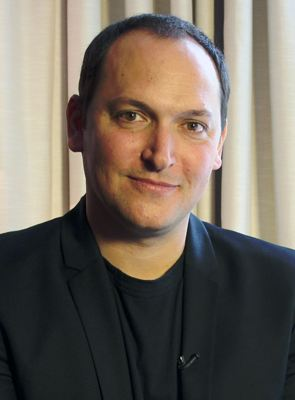

Atividades: Diretor, 2º Assistente de produção, Ator mais
Nacionalidade: Francês
Nascimento: 17 de junho de 1973
Idade: 48 anos
Leterrier nasceu em Paris, filho do diretor François Leterrier e da figurinista Catherine Leterrier. Ele é o sobrinho do político Laurent Fabius e do antiquário François Fabius. Ele foi incentivado artisticamente por sua mãe. Foi baterista e entrou para um grupo de música antes de entrar no ramo do cinema. Aos 18 anos, depois de alguns treinamentos em publicidade e propaganda, deixou a França para estudar cinema na Escola de Belas Artes de Tish na Universidade de Nova York.
Em 1997, foi assistente de Jean-Pierre Jeunet no set de Alien: Resurrection. Ao retornar à França, trabalhou com Luc Besson na produção de comerciais para o fan clube da L'Oréal, bem como no filme Jeanne d'Arc. Também trabalhou como segundo diretor assistente com Alain Chabat na produção de Astérix & Obélix: Mission Cléopâtre (2002).
Mais tarde, no mesmo ano, estreou com o sucesso Transporter um filme de ação estrelado por Jason Statham. Embora o lançamento nos EUA liste-o como diretor artístico e Corey Yuen como o diretor, os créditos de abertura do lançamento europeu indicaram-no como diretor e Yuen como diretor de ação. Leterrier, depois, entrou no grupo de diretores trabalhando em filmes produzidos ou associados com Luc Besson, ao lado de Chris Nahon e Pierre Morel. Dirigiu em 2005 Unleashed, estrelado por Jet Li e Morgan Freeman, seu filme de estreia solo, um longa-metragem de artes marciais. Luc Besson, em seguida, confiou-lhe o controle de direção de Transporter 2 realizado desta vez em Miami.
Em 2008, como parte da atual onda de diretores franceses empregados em Hollywood, ele dirigiu seu primeiro filme americano de grande orçamento, O Incrível Hulk, para a Universal Pictures e Marvel Studios. Seu próximo projeto foi Clash of the Titans, um remake do filme homônimo de 1981, e produzido pela Warner Bros., que foi lançado em 2 de abril de 2010. Por causa do sucesso de bilheteria, Leterrier mencionou que gostaria de criar uma franquia de Clash of the Titans. No entanto, em junho de 2010, Jonathan Liebesman foi nomeado diretor da sequência, Wrath of the Titans, deixando o envolvimento de Leterrier em futuros filmes em dúvida.
Leterrier dirigiu o filme de espionagem Grimsby (2016), escrito e estrelado por Sacha Baron Cohen., em Em 2 de Maio de 2022, ele foi anunciado como substituto de Justin Lin nos filmes Fast X (2023) e Velozes e Furiosos 11 (2024).